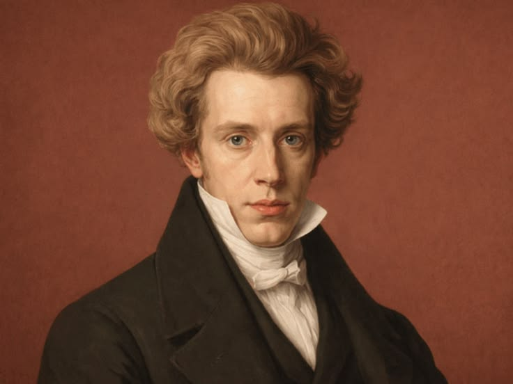
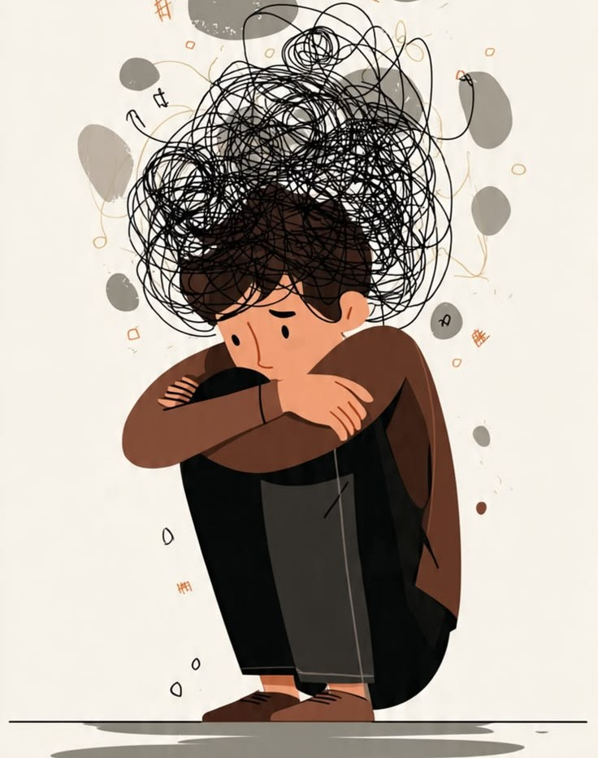

Who Was Søren Kierkegaard?
Søren Kierkegaard (1813–1855) was a Danish philosopher, theologian, writer, and religious thinker whose work became one of the most important sources for the later development of existential philosophy. He is widely regarded as a central precursor of existentialism because of his intense focus on the individual, personal choice, anxiety, despair, faith, and the problem of what it means for a human being to exist and become oneself.
Kierkegaard believed that philosophy could lose sight of human existence when it attempted to explain reality through vast and impersonal intellectual systems. A philosophical system might describe history, logic, or society, but no system could live an individual's life or make that person's decisive choices. Each human being must personally confront uncertainty, possibility, responsibility, and the difficult question of how to live.
His philosophy therefore explored some of the most personal questions in human life: What does it mean to become oneself? Why can freedom produce anxiety? What is despair, and why can a person fail to become the self they are capable of becoming? What does it mean to have faith when religious commitment cannot simply be reduced to objective proof?
Kierkegaard approached these questions through philosophy, literature, theology, psychology, and a highly distinctive method of writing. Many of his most famous works were published under carefully constructed pseudonyms, allowing different perspectives and forms of existence to speak in their own voices. His writings therefore do not form a simple philosophical system but challenge readers to confront the problems of existence for themselves. :contentReference[oaicite:0]{index=0}
Søren Kierkegaard: Quick Facts
- Full name — Søren Aabye Kierkegaard
- Born — 5 May 1813
- Died — 11 November 1855
- Nationality — Danish
- Era — Nineteenth-century philosophy
- Associated with — Existential philosophy and Christian existentialism
- Major philosophical subjects — Existence, subjectivity, freedom, anxiety, despair, faith, ethics, and religion
- Major philosophical opponent — Systematic Hegelian philosophy
- Famous work — Either/Or
- Important work — Fear and Trembling
- Important work — The Concept of Anxiety
- Important work — The Sickness Unto Death
Søren Kierkegaard's Early Life and Historical Background

Søren Kierkegaard was born in Copenhagen, Denmark, on 5 May 1813, the youngest of seven children. He spent almost his entire life in and around Copenhagen, a city that remained the central setting of both his personal life and intellectual activity. His upbringing took place within a deeply religious Lutheran environment, and the influence of Christianity would remain fundamental throughout his philosophical and religious writings. :contentReference[oaicite:1]{index=1}
Kierkegaard lived during a period in which European philosophy was strongly shaped by German idealism and by debates surrounding the philosophy of Georg Wilhelm Friedrich Hegel. Hegelian thought was especially influential in the intellectual world that surrounded Kierkegaard in nineteenth-century Denmark. Kierkegaard's relationship with Hegelianism was complex: although he became a powerful critic of philosophical system-building, modern scholarship emphasizes that his thought also developed through sustained engagement with Hegel and Danish Hegelian thinkers. :contentReference[oaicite:2]{index=2}
Kierkegaard studied at the University of Copenhagen, where he pursued theology while also developing strong interests in philosophy, literature, classical thought, and the intellectual controversies of his age. After a prolonged period of study, he completed his theological education and later wrote a major academic dissertation on Socratic irony. His intellectual development was therefore shaped by an unusual combination of Christian theology, ancient philosophy, modern German thought, and literary culture. :contentReference[oaicite:3]{index=3}
Much of Kierkegaard's adult life was spent writing in Copenhagen, where he produced an extraordinary body of philosophical, literary, and religious works, most of them during the 1840s. He was not a conventional university philosopher, and his international reputation developed largely after his death. His writings nevertheless became enormously influential in philosophy, theology, psychology, literature, and the later development of existential and phenomenological thought. :contentReference[oaicite:4]{index=4}
Why Is Søren Kierkegaard Called the Father of Existentialism?
Søren Kierkegaard is often called the father of existentialism because his philosophy placed the problem of individual human existence at the center of philosophical reflection. Rather than beginning primarily with abstract questions about reality, he asked what it means for a particular human being to exist, choose, suffer, believe, take responsibility, and gradually become a self. :contentReference[oaicite:0]{index=0}
Kierkegaard did not create the later twentieth-century philosophical movement known as existentialism in its complete form. Thinkers such as Martin Heidegger, Jean-Paul Sartre, Albert Camus, and Simone de Beauvoir developed very different approaches to existence, freedom, meaning, and human subjectivity. Nevertheless, many themes later associated with existentialism already appear with remarkable force in Kierkegaard's writings. :contentReference[oaicite:1]{index=1}
These themes include freedom, possibility, anxiety, despair, individuality, responsibility, inwardness, and the difficult task of becoming oneself. Kierkegaard believed that existence is not something a person merely observes from outside as an intellectual object. It is something each individual must personally live, and no theory can make another person's decisive choices on their behalf. :contentReference[oaicite:2]{index=2}
His importance to existentialism therefore comes from his insistence that philosophy must take the concrete individual seriously. A philosophical theory may describe humanity in general, history, or society, but it cannot replace the personal struggle involved in living a life. For Kierkegaard, existence always has an inward and personal dimension that cannot be fully captured by abstract systems. :contentReference[oaicite:3]{index=3}
What Was Søren Kierkegaard's Philosophy?
Søren Kierkegaard's philosophy was concerned above all with the problem of human existence and the task of becoming a self. He investigated how people make choices, why freedom produces anxiety, how despair arises, and how an individual can relate to ethical and religious questions that cannot always be resolved through detached observation or objective certainty. :contentReference[oaicite:4]{index=4}
Kierkegaard was suspicious of philosophical systems that attempted to explain every aspect of reality from a single abstract perspective. He did not reject intellectual thought itself, but argued that thinking about existence differs from actually existing. Even the most comprehensive system cannot replace the lived experience of a person who must act within time, uncertainty, possibility, and responsibility. :contentReference[oaicite:5]{index=5}
His philosophy therefore combines existential reflection with psychology, ethics, theology, literature, and social criticism. Much of his writing was deliberately indirect: instead of always presenting his own conclusions directly, Kierkegaard used pseudonymous authors representing different perspectives and ways of living. Readers are consequently challenged to interpret and appropriate ideas for themselves rather than merely receive a ready-made doctrine. :contentReference[oaicite:6]{index=6}
At the heart of Kierkegaard's philosophy is the question of how truth becomes meaningful within a person's life. Knowledge alone does not guarantee transformation, commitment, or self-understanding. A person may understand ethical or religious ideas intellectually while still avoiding the difficult choices those ideas demand. Philosophy therefore becomes closely connected with the question of how one actually lives. :contentReference[oaicite:7]{index=7}
Kierkegaard and the Importance of the Individual
The individual occupies a central position in Kierkegaard's philosophy. He believed that modern society, public opinion, and abstract philosophical thinking could encourage people to forget their own personal responsibility by thinking only in terms of humanity, society, history, institutions, or large intellectual systems. The individual must ultimately confront existence personally. :contentReference[oaicite:8]{index=8}
For Kierkegaard, becoming an individual does not mean simply doing whatever one wants or withdrawing completely from other people. Individuality requires self-reflection, choice, commitment, and responsibility. A person must confront the question of how to live rather than permanently hiding behind social conventions, inherited roles, or the opinions and expectations of the surrounding crowd. :contentReference[oaicite:9]{index=9}
Kierkegaard also understood the self as something that must in an important sense be achieved. Human beings possess possibilities, but they are also shaped by circumstances they did not choose. Becoming a self therefore involves negotiating the tension between possibility and necessity, freedom and limitation, imagination and concrete reality. Failure to relate these dimensions properly can become a form of despair. :contentReference[oaicite:10]{index=10}
This emphasis on the individual became one of Kierkegaard's most influential contributions to modern philosophy. Later existential and phenomenological thinkers continued to investigate the tension between individuality and society, freedom and limitation, authentic commitment and conformity. Kierkegaard's distinctive contribution was to insist that these questions concern not merely abstract human nature but the concrete life of each existing person. :contentReference[oaicite:11]{index=11}
Søren Kierkegaard and Hegel: Why Did Kierkegaard Criticize Hegel?
Kierkegaard's criticism of Hegelian philosophy is one of the most important aspects of his intellectual identity. Hegel developed an ambitious philosophical system concerned with reality, history, consciousness, and the development of spirit through dialectical processes. Kierkegaard objected particularly to forms of system-building that appeared to place abstract universality above the concrete situation of the existing individual. :contentReference[oaicite:12]{index=12}
Kierkegaard believed that systematic philosophy could become detached from the realities of human existence. A philosophical system may describe historical development or explain universal concepts, but the individual person still faces immediate questions concerning choice, suffering, guilt, death, responsibility, and personal commitment. No philosophical explanation can make these existential decisions for the person who must actually live them. :contentReference[oaicite:13]{index=13}
His objection was therefore not simply that philosophical thinking is useless or that Hegel had no influence upon him. Modern scholarship has shown that Kierkegaard's relationship with Hegel was more complex than the image of a simple opposition suggests, and many of his criticisms were directed at Danish Hegelians and contemporary forms of speculative philosophy as well as broader ambitions of system-building. :contentReference[oaicite:14]{index=14}
This debate helped establish a central theme later associated with existential philosophy: there is a difference between understanding existence as an intellectual concept and actually existing. Abstract thought can illuminate important aspects of reality, but it cannot completely replace the first-person perspective of a human being living through uncertainty and making commitments without complete certainty. :contentReference[oaicite:15]{index=15}
Kierkegaard and Subjectivity: What Does "Truth Is Subjectivity" Mean?
One of Kierkegaard's most famous ideas is commonly summarized by the phrase "truth is subjectivity." This statement is often misunderstood as meaning that objective facts do not exist or that every personal opinion is equally true. Kierkegaard's concern is more specifically with the kind of truth involved when an individual must personally relate to a question through commitment and inwardness. :contentReference[oaicite:16]{index=16}
Some questions can be investigated objectively through evidence, logic, and shared methods of inquiry. Mathematical, scientific, and many historical questions do not become true merely because someone feels strongly about them. But questions concerning how a person should live, what they should commit themselves to, and how they relate to religious faith also involve the individual's personal mode of existence. :contentReference[oaicite:17]{index=17}
Kierkegaard emphasized what is often called appropriation: the way an individual takes a truth into their own existence. A person may possess extensive knowledge about morality or religion while remaining personally indifferent to what that knowledge demands. Existential truth therefore concerns not only what a person knows but also how that person exists in relation to what they understand and affirm. :contentReference[oaicite:18]{index=18}
Subjectivity should consequently be understood as a form of inward engagement rather than arbitrary opinion. Kierkegaard challenges the idea that a completely detached perspective is always sufficient for understanding human existence. Reflection is necessary, but endless reflection alone cannot make a decision; at some point, an individual must choose, commit, and accept responsibility for how they live. :contentReference[oaicite:19]{index=19}
Kierkegaard's Three Stages of Life
One of the best-known aspects of Kierkegaard's philosophy is his description of different stages or spheres of existence. These are commonly described as the aesthetic, ethical, and religious spheres. However, this three-part division is a useful interpretation rather than a simple psychological formula, and Kierkegaard's writings contain important distinctions and variations within these forms of life. :contentReference[oaicite:20]{index=20}
The spheres represent different ways of understanding what gives human life value and how an individual should relate to choice, commitment, and the self. They should not be understood as a mechanical sequence through which every person automatically progresses. Movement between them requires transformation and personal decision, while aesthetic dimensions remain present even within more committed forms of life. :contentReference[oaicite:21]{index=21}
1. The Aesthetic Stage
The aesthetic sphere is associated with immediate experience, pleasure, novelty, imagination, and the pursuit of interesting possibilities. The aesthetic individual may resist lasting commitments in order to preserve openness and avoid boredom. Kierkegaard's analysis explores how such a life can contain both creativity and pleasure while also risking dissatisfaction, instability, and forms of despair. :contentReference[oaicite:22]{index=22}
2. The Ethical Stage
The ethical sphere involves responsibility, continuity, and deliberate commitment. Instead of continually moving between possibilities, the individual recognizes that freedom also requires choosing and accepting responsibility for the person one becomes. Ethical existence therefore treats life increasingly in terms of tasks, duties, and commitments rather than merely temporary experiences. :contentReference[oaicite:23]{index=23}
3. The Religious Stage
The religious sphere concerns an individual's relationship with God and the distinctive demands of faith. For Kierkegaard, religious existence cannot simply be reduced to conventional morality or objective knowledge because it involves inwardness, commitment, paradox, and uncertainty. His understanding of religious existence is particularly important for interpreting works such as Fear and Trembling. :contentReference[oaicite:24]{index=24}
Kierkegaard's Aesthetic Stage of Life
In Kierkegaard's account, the aesthetic sphere is characterized by a life oriented toward immediate enjoyment, interesting experiences, imagination, and the pursuit of possibility. The aesthetic individual may value beauty, pleasure, romance, entertainment, or intellectual stimulation while resisting commitments that appear to restrict future possibilities and personal freedom. :contentReference[oaicite:25]{index=25}
Kierkegaard did not suggest that pleasure, beauty, or artistic experience are inherently wrong. His concern was with a form of life governed entirely by changing experiences and the avoidance of boredom. What appears exciting today may become unsatisfying tomorrow, producing a continuous search for new stimulation without providing a stable basis for selfhood or lasting commitment. :contentReference[oaicite:26]{index=26}
This problem reveals an important existential tension. A person who continually avoids commitment may preserve an enormous range of possibilities, yet may also postpone the decisions through which a coherent identity is formed. Kierkegaard therefore explores the danger that endless possibility can become a way of avoiding the responsibility involved in actually choosing a life. :contentReference[oaicite:27]{index=27}
The aesthetic sphere consequently raises the question of whether freedom means possessing unlimited options or committing oneself to a meaningful direction. Kierkegaard's later contrast with ethical existence suggests that voluntary commitment need not simply destroy freedom. Instead, commitment can become part of the process through which an individual gives shape and continuity to the self. :contentReference[oaicite:28]{index=28}
Kierkegaard's Ethical Stage of Life
The ethical stage represents a movement toward responsibility, continuity, and commitment. The individual recognizes that a meaningful life cannot consist entirely of temporary experiences and begins to understand the importance of decisions that give shape to one's character. Ethical existence treats freedom not merely as the possession of possibilities but as the responsibility to choose. :contentReference[oaicite:29]{index=29}
Ethical existence involves taking responsibility for one's actions and accepting that freedom is connected with commitment. A person does not escape responsibility simply by refusing to decide, because avoiding a choice can itself shape the direction of a life. Kierkegaard therefore presents deliberate choice as an essential element in becoming a more coherent and responsible self. :contentReference[oaicite:30]{index=30}
The ethical sphere also involves accepting aspects of oneself and one's life that cannot simply be chosen away. Kierkegaard's account of selfhood therefore combines self-shaping with self-acceptance. An individual has possibilities to develop, but also exists within concrete conditions, relationships, limitations, and responsibilities that form the actual circumstances in which choices must be made. :contentReference[oaicite:31]{index=31}
Kierkegaard's ethical stage is consequently closely connected with the development of the self. Through commitment, responsibility, and deliberate action, the individual attempts to move beyond merely drifting between desires and possibilities. Yet Kierkegaard also believed that ethical existence raises deeper questions concerning guilt, suffering, and faith that lead toward the religious dimension of his philosophy. :contentReference[oaicite:32]{index=32}
Kierkegaard's Religious Stage of Life
The religious stage is among the most distinctive and controversial aspects of Kierkegaard's philosophy. It concerns the individual's relationship with God and cannot, in his view, be reduced entirely to social morality, institutional religion, or objective philosophical knowledge. Religious existence demands a form of inwardness and personal commitment that cannot simply be delegated. :contentReference[oaicite:33]{index=33}
Kierkegaard believed that faith involves more than accepting information that has been objectively demonstrated beyond all doubt. Religious commitment confronts the individual with uncertainty and paradox, particularly within Christianity, and therefore requires a personal mode of relating to what is believed. This emphasis explains why faith occupies such a central position in his existential thought. :contentReference[oaicite:34]{index=34}
His analysis of religious existence is especially famous in Fear and Trembling, where the biblical story of Abraham raises difficult questions about faith, ethics, and the relationship between the individual and God. Kierkegaard does not present these problems as simple moral puzzles with easy solutions, but as paradoxes that reveal the distinctive character of religious commitment. :contentReference[oaicite:35]{index=35}
Kierkegaard's account of the religious sphere became central to Christian existentialism. At the same time, his writings influenced many nonreligious thinkers because of their powerful analysis of freedom, choice, uncertainty, individuality, and selfhood. Even where later existentialists rejected his Christian conclusions, they continued to engage with questions that Kierkegaard had made philosophically impossible to ignore. :contentReference[oaicite:36]{index=36}
What Was Kierkegaard's Concept of Anxiety?

Anxiety is one of the most influential concepts in Kierkegaard's philosophy, especially in The Concept of Anxiety. He did not understand anxiety simply as ordinary fear of a particular object. Fear normally has something definite that threatens us, whereas existential anxiety arises from the awareness of possibility, freedom, and the unsettling openness of what a person may become. :contentReference[oaicite:37]{index=37}
Kierkegaard famously connected anxiety with what is often translated as the "dizziness of freedom." Human beings possess the capacity to choose among possibilities, and this freedom can be both empowering and disturbing. When a person becomes aware that different futures are genuinely possible, the openness of choice also reveals that no external system can completely remove personal responsibility. :contentReference[oaicite:38]{index=38}
Anxiety therefore reveals something fundamental about human existence. A person is not completely fixed like an object in nature; human beings can imagine possibilities, reject one path, choose another, and reflect upon what they might become. Possibility creates freedom, but freedom also exposes individuals to uncertainty because the future cannot be completely secured before a decisive choice is made. :contentReference[oaicite:39]{index=39}
Kierkegaard's analysis of anxiety became extremely influential in existential philosophy and psychology. He did not regard anxiety merely as an accidental disturbance that should always be eliminated, but as something capable of revealing the conditions of human freedom. Later thinkers developed this insight in different ways while continuing to explore anxiety as a disclosure of human possibility and uncertainty. :contentReference[oaicite:40]{index=40}
Kierkegaard's Philosophy of Despair
Despair is another central concept in Kierkegaard's philosophy, especially in The Sickness Unto Death. He did not understand despair simply as an ordinary feeling of sadness or depression, but as a deeper problem involving a person's relationship with the self. Despair concerns a failure, in some fundamental sense, to become or properly relate to oneself. :contentReference[oaicite:41]{index=41}
Human beings, according to Kierkegaard, are capable of reflecting upon themselves and imagining what they might become. The self therefore exists within tensions between possibility and necessity, the finite and the infinite, and the temporal and the eternal. Becoming oneself is not a completed achievement but an ongoing task of relating these different dimensions of human existence. :contentReference[oaicite:42]{index=42}
Despair can consequently appear in different forms. A person may refuse to be the self they actually are, lose themselves in imagined possibilities without acting, or become trapped in the belief that nothing in their life can change. Kierkegaard was particularly interested in the subtle ways people avoid confronting the difficult responsibility involved in becoming themselves. :contentReference[oaicite:43]{index=43}
His philosophy of despair has remained influential because it connects questions about psychological suffering with philosophical problems of identity, responsibility, freedom, and meaning. For Kierkegaard, the deepest forms of despair cannot be understood merely by observing external circumstances; they concern how an individual relates to their own existence and, ultimately in his Christian framework, to God. :contentReference[oaicite:44]{index=44}
What Is the Self According to Kierkegaard?
Kierkegaard's philosophy of the self is closely connected with his analysis of despair and the task of becoming a person. He did not regard the self as a fixed object that simply exists in a finished form. Instead, the self is a relation that must consciously relate to itself, making selfhood an ongoing existential task involving reflection, possibility, choice, and responsibility.
Human existence contains tensions between different dimensions, including possibility and necessity, freedom and limitation, and the finite and the infinite. A person can lose themselves by attempting to live entirely within only one of these dimensions, either escaping into unlimited possibilities or refusing the possibilities that make personal development and transformation possible.
Becoming oneself is therefore neither automatic nor merely a matter of following one's desires. It requires confronting one's actual circumstances while also taking responsibility for what one may become. For Kierkegaard, the self develops through the difficult work of choosing, committing, and honestly confronting one's own existence.
In The Sickness Unto Death, this problem ultimately has a religious dimension, since the self is understood in relation to the power that established it. Kierkegaard therefore connects genuine selfhood with overcoming despair and establishing a proper relation to oneself, one's possibilities, and, in his Christian understanding, God.
Kierkegaard's Philosophy of Freedom and Choice
Freedom plays a central role in Kierkegaard's understanding of human existence because human beings can imagine possibilities and make choices that help shape their lives. Unlike objects simply determined by external forces, individuals must continually relate to what they might do and become, making freedom inseparable from personal responsibility and the formation of the self.
Kierkegaard did not, however, present freedom as a simple source of happiness or liberation. Freedom can also produce anxiety because every significant choice involves uncertainty, and choosing one possibility may require abandoning others. The individual must act without possessing complete knowledge of the future or its consequences.
This means that refusing to choose cannot permanently free a person from responsibility. Avoidance is itself a way of existing and can shape a person's life just as deliberate action does. Kierkegaard therefore emphasizes commitment as an important response to the instability created by endless possibility and indecision.
Freedom and choice thus reveal a fundamental condition of human existence: people must live and act before they can achieve complete certainty about the meaning or outcome of their decisions. For Kierkegaard, this uncertainty is not merely an intellectual problem but a concrete feature of existence that every individual must face.
What Is Kierkegaard's Leap of Faith?
The idea of the leap of faith is closely associated with Søren Kierkegaard, although the popular expression does not appear as a single technical doctrine defining his entire philosophy. It broadly refers to the problem of religious commitment when objective certainty cannot eliminate doubt, risk, or existential uncertainty for the individual who must personally believe.
Faith, in this context, cannot simply be treated as the conclusion of a mathematical demonstration or an impersonal philosophical proof. Kierkegaard distinguishes objective reflection from the inward commitment involved in religious existence. The individual confronts uncertainty and must decide how to relate personally to what cannot be completely secured through detached reasoning alone.
The leap therefore represents commitment in the presence of risk and uncertainty. It does not mean that every irrational belief should be accepted without question, nor does it dismiss rational inquiry. Rather, Kierkegaard investigates whether objective proof can ever completely replace the personal act of faith required in Christianity.
This problem became influential beyond religious philosophy because human beings frequently make important commitments without complete knowledge of the future. Love, ethical responsibility, vocation, and personal identity can all involve decisions made under uncertainty. Kierkegaard's analysis therefore raises the broader question of how individuals act when certainty cannot be obtained in advance.
Søren Kierkegaard's Fear and Trembling Explained
Fear and Trembling, published pseudonymously under the name Johannes de Silentio, is one of Kierkegaard's most famous works. It examines the biblical story of Abraham and Isaac in order to explore the difficult relationship between faith, ethics, obedience, and the individual's absolute relation to God. The work deliberately presents problems rather than offering simple moral conclusions.
Abraham and Isaac
Kierkegaard focuses on Abraham's willingness to obey God's command to sacrifice Isaac. The story creates a profound philosophical problem because ordinary ethical reasoning appears to condemn the killing of an innocent person, while Abraham understands himself as responding to a divine command. This tension makes Abraham both ethically unintelligible and religiously significant within the work.
The Teleological Suspension of the Ethical
Kierkegaard asks whether there can be an exceptional situation in which the individual stands in a relation to God that cannot be fully expressed through universal ethical categories. This is the meaning of the controversial idea of a teleological suspension of the ethical. It should not be understood as a general permission for individuals to ignore morality whenever they claim religious authority.
The Knight of Faith
The work also develops the image of the knight of faith, who makes an absolute commitment without possessing objective certainty that would remove all risk. The knight represents inwardness, paradox, and faith's willingness to live with uncertainty. Through this figure, Kierkegaard explores the difference between understanding religious ideas intellectually and existing personally in relation to them.
Kierkegaard's Philosophy of Faith and Christianity
Christianity was central to Kierkegaard's intellectual and personal life, but he was deeply critical of forms of Christianity that he believed had become socially comfortable, conventional, or merely institutional. He distinguished genuine Christian existence from belonging to a Christian society simply because Christianity had become part of a nation's culture and public identity.
For Kierkegaard, faith required inwardness and personal appropriation. Religious belief could not be reduced to memorizing doctrines, accepting public opinion, or participating automatically in religious institutions. Christianity presented the individual with a demanding existential task that required serious commitment and a personal relationship to questions of sin, faith, and salvation.
He also emphasized the paradoxical character of Christianity, particularly the Christian claim that God became human in Christ. Such a claim could not, in his view, simply be transformed into an objective philosophical conclusion that removed all uncertainty. Faith therefore involved a personal response to a paradox rather than detached certainty secured by philosophical demonstration.
Kierkegaard's criticism of established Christendom made him highly controversial, particularly during the final period of his life. Yet it also contributed greatly to his influence on philosophy of religion and Christian existentialism, where questions of inwardness, commitment, individuality, and the difference between cultural religion and lived faith remain central themes.
What Did Kierkegaard Mean by "The Crowd Is Untruth"?
Kierkegaard was deeply concerned about the power of the crowd and public opinion. His criticism was not simply directed against society, cooperation, or collective political life. Rather, he worried that individuals could escape personal responsibility by hiding within anonymous groups and allowing the opinions of the majority to determine what they think and value.
Within a crowd, responsibility can become divided and obscured. A person may feel less accountable because an action appears to belong to everyone and therefore to no one in particular. Kierkegaard believed that this anonymity could encourage conformity and make it easier for individuals to avoid serious reflection about their own beliefs, actions, and moral responsibilities.
His criticism was closely connected with his defense of the individual. Truth in the existential sense requires personal appropriation and responsibility, whereas anonymous public opinion can encourage people to repeat ideas without genuinely examining them. The problem is not simply that a majority can be factually mistaken, but that the individual may cease to think personally.
These concerns remain relevant to discussions of mass media, social conformity, public opinion, and digital culture. Kierkegaard's central question is whether an individual can preserve inwardness and responsibility within a society that constantly encourages collective identification. His critique challenges people to ask whether their beliefs genuinely belong to them or merely reflect the surrounding crowd.
Why Did Søren Kierkegaard Use Pseudonyms?
One of the most distinctive features of Kierkegaard's writing is his extensive use of pseudonyms. Many of his major works were published under fictional authorial names, and the views expressed by these authors should not automatically be identified with Kierkegaard's own final philosophical or religious position. Each pseudonym often represents a distinctive perspective or mode of existence.
This method allowed Kierkegaard to explore philosophical problems from within different perspectives rather than always speaking directly in his own authorial voice. Pseudonymous works could present aesthetic, ethical, skeptical, or religious positions and allow their tensions and limitations to emerge. Readers were therefore confronted with competing possibilities rather than given a simple doctrine to accept.
Kierkegaard described this broader strategy as a form of indirect communication. Certain existential truths, he believed, cannot simply be transferred from one person to another as information. A reader must personally appropriate what is at stake and confront the question of how the ideas relate to their own life and manner of existing.
His literary method therefore forms an essential part of his philosophy rather than being merely a stylistic curiosity. The pseudonyms encourage interpretation, uncertainty, and active reflection, making the reader participate in the philosophical process. Kierkegaard often sought not simply to inform his audience but to place them in a position where they had to examine themselves.
Major Works of Søren Kierkegaard
Søren Kierkegaard produced a large and remarkably diverse body of philosophical, theological, literary, and psychological writing. His works frequently return to fundamental questions about existence, choice, anxiety, despair, ethics, faith, and the relationship between the individual and society. Different works approach these problems through distinct pseudonymous voices, genres, and philosophical methods.
- Either/Or — A major work exploring aesthetic and ethical forms of existence, choice, commitment, and the problem of how a person should live.
- Fear and Trembling — A philosophical examination of Abraham, faith, ethics, sacrifice, and the paradoxes of religious existence.
- The Concept of Anxiety — A major analysis of anxiety, freedom, possibility, and the psychological conditions of human existence.
- Philosophical Fragments — A work examining truth, learning, religious revelation, and the relationship between human understanding and Christianity.
- Concluding Unscientific Postscript — A major exploration of subjectivity, objective knowledge, existence, and what it means to become personally committed to truth.
- The Sickness Unto Death — Kierkegaard's influential analysis of despair, selfhood, and the problem of becoming oneself.
- Works of Love — A philosophical and religious investigation of love, duty, the neighbor, and ethical relationships.
Søren Kierkegaard's Main Philosophical Ideas
1. The Individual
Kierkegaard believed that each person must confront their own existence and take responsibility for how they live. Social systems, philosophical theories, and public opinion can describe human life in general, but they cannot make an individual's decisions. The concrete person must still choose, act, and accept responsibility for their own relationship to themselves, others, and, for Kierkegaard, God.
2. Freedom and Anxiety
Freedom creates possibility, but possibility also creates anxiety. Human beings can imagine different futures and recognize that their choices may fundamentally alter their lives. This openness is empowering, yet it is also unsettling because individuals must choose without possessing complete knowledge of what the future will bring.
3. Despair and the Self
Despair can emerge when a person fails to establish a proper relation to themselves. A person may refuse to be the self they are or attempt to become a self entirely through their own will while ignoring the deeper conditions of existence. Becoming oneself is therefore not automatic but an existential task involving reflection, responsibility, limitation, possibility, and, ultimately, faith.
4. Subjectivity and Existential Truth
Kierkegaard emphasized that some of life's most important questions concern not only what a person knows objectively but how they exist in relation to what they understand and believe. A person may possess extensive knowledge about ethical or religious ideas while remaining personally indifferent to them. Existential truth therefore involves inward appropriation rather than information alone.
5. Faith and Commitment
Faith involves commitment under conditions of uncertainty. Kierkegaard explored the limits of objective proof and the personal risks involved when an individual commits themselves to a religious life. Such commitment cannot simply be replaced by detached observation because faith requires the individual to exist personally in relation to what they believe.
6. Becoming Oneself
Human existence involves the difficult task of becoming oneself. Kierkegaard believed that people can lose themselves through conformity, avoidance, despair, or an unwillingness to confront the responsibilities created by freedom. Becoming a self requires a conscious relationship to one's possibilities and limitations rather than simply drifting according to social expectations or temporary desires.
Søren Kierkegaard and Friedrich Nietzsche
Søren Kierkegaard and Friedrich Nietzsche were major nineteenth-century thinkers who challenged conformity and encouraged individuals to examine the values by which they live. Both criticized aspects of modern society and became important for later existential and modern philosophy. Yet their intellectual projects emerged from profoundly different relationships to Christianity, morality, and the meaning of human existence.
Kierkegaard's philosophy was deeply Christian and centered on the individual's relation to God, faith, and the paradoxes of religious existence. Nietzsche, by contrast, developed a radical critique of Christianity and traditional morality, arguing that inherited values required fundamental revaluation. Their differing conclusions reveal radically different responses to similar concerns about individuality.
Both thinkers were concerned with the dangers of conformity and the tendency of individuals to accept socially inherited values without serious examination. Kierkegaard criticized the crowd and cultural Christianity, while Nietzsche criticized herd morality and the unreflective acceptance of conventional ideals. In both cases, philosophy becomes a challenge to passive and unexamined existence.
Their comparison demonstrates that similar philosophical questions about meaning, individuality, and authenticity need not produce the same answers. Kierkegaard directed the individual toward a demanding religious relation to God, whereas Nietzsche sought the creation and revaluation of values after the critique of traditional foundations. Both remain essential figures for understanding modern thought.
Søren Kierkegaard and Jean-Paul Sartre
Kierkegaard is widely regarded as an important precursor of existentialism, while Jean-Paul Sartre later developed one of the twentieth century's most influential forms of existential philosophy. Both thinkers emphasized freedom, choice, responsibility, anxiety, and the concrete existence of the individual rather than treating human life solely as an abstract philosophical problem.
The most fundamental difference between them concerns religion. Kierkegaard's existential thought is inseparable from Christianity and the individual's relationship with God, whereas Sartre developed an explicitly atheistic existentialism. Sartre argued that human beings exist without a divinely given essence and must assume responsibility for defining themselves through their choices and actions.
Both philosophers nevertheless understood freedom as a difficult condition rather than a simple privilege. Kierkegaard explored the anxiety and uncertainty produced by possibility, while Sartre examined the radical responsibility that accompanies human freedom. Their philosophies therefore share important existential concerns even though they interpret the ultimate meaning of existence very differently.
Kierkegaard helped prepare the intellectual ground for later existential philosophy by insisting that philosophy must address the concrete individual who lives, chooses, suffers, and faces uncertainty. Sartre transformed several of these concerns within a secular twentieth-century framework. Comparing them shows how existential philosophy developed from religious reflection into diverse philosophical forms.
Søren Kierkegaard's Influence on Existentialism and Philosophy
Kierkegaard's influence became increasingly important after his death, particularly during the twentieth century. His writings contributed to the development of existential philosophy, existential theology, psychology, and modern literary thought. By placing the concrete individual at the center of philosophical reflection, he offered a powerful alternative to traditions focused primarily on universal systems.
Thinkers associated with existential philosophy, including Martin Heidegger, Karl Jaspers, Jean-Paul Sartre, Albert Camus, and Simone de Beauvoir, developed their own distinctive philosophical projects and should not simply be described as followers of Kierkegaard. Nevertheless, later debates about anxiety, freedom, authenticity, individuality, and the meaning of existence were shaped by questions he had explored earlier.
Kierkegaard also exerted major influence on Christian theology and philosophy of religion, particularly among thinkers concerned with faith, individuality, paradox, and the limits of rational certainty. His analyses of anxiety, despair, and selfhood also became important for existential psychology and psychotherapy, where philosophical questions about identity and meaning intersect with human experience.
Today, Kierkegaard remains relevant because his philosophy addresses problems that continue to shape modern life: conformity, anxiety, identity, uncertainty, personal responsibility, religious belief, and the difficulty of becoming oneself. His lasting challenge is directed toward the individual who must decide how to live when no abstract system can make the essential choices of existence on their behalf.
Søren Kierkegaard's Philosophy Explained Simply
Kierkegaard's philosophy begins with the idea that being human is not simply about possessing knowledge. Every person must live their own life, make choices, face uncertainty, and eventually confront the question of who they are and what they are becoming.
- Why do we experience anxiety? — Because freedom gives us possibilities, and possibilities create uncertainty about what we should choose.
- What is despair? — Despair is a deeper problem involving a person's relationship with themselves and their failure or difficulty in becoming who they are.
- What are the three stages of life? — Kierkegaard describes aesthetic, ethical, and religious ways of existing, each involving different forms of value and commitment.
- What is the leap of faith? — Faith involves commitment under conditions where complete objective certainty is unavailable.
- What does becoming yourself mean? — It means confronting freedom, responsibility, possibility, and the difficult task of forming a meaningful relationship with oneself.
Why Is Søren Kierkegaard Important in the History of Philosophy?
Søren Kierkegaard is important because he redirected philosophical attention toward the concrete experience of individual existence. At a time when many philosophers were constructing large systematic accounts of reality and history, Kierkegaard emphasized the person who must actually live within uncertainty and make personal decisions.
His analysis of anxiety, despair, freedom, selfhood, and faith introduced themes that later became central to existentialism. Kierkegaard showed that philosophy could investigate not only abstract concepts but also the psychological and existential conditions of living as a human being.
His influence extends beyond philosophy into theology, psychology, literature, and cultural criticism. Kierkegaard remains one of the most important thinkers for anyone interested in existentialism, philosophy of religion, the problem of individuality, and the meaning of human freedom.
Frequently Asked Questions About Søren Kierkegaard
Who was Søren Kierkegaard?
Søren Kierkegaard was a Danish philosopher, theologian, writer, and religious thinker who lived from 1813 to 1855. He is widely regarded as one of the most important precursors of existentialism because of his focus on individuality, freedom, anxiety, despair, and faith.
Why is Kierkegaard called the father of existentialism?
Kierkegaard is called the father of existentialism because he made individual human existence a central philosophical concern. His work explored freedom, choice, anxiety, despair, responsibility, and the problem of becoming oneself long before existentialism developed into a major philosophical movement.
What was Søren Kierkegaard's philosophy?
Kierkegaard's philosophy focused on human existence, subjectivity, freedom, anxiety, despair, selfhood, ethics, and religious faith. He argued that abstract philosophical systems cannot completely explain the concrete life of an individual who must personally make choices and accept responsibility.
What did Kierkegaard mean by anxiety?
Kierkegaard connected anxiety with freedom and possibility. Unlike ordinary fear, existential anxiety does not necessarily have one specific external object because it can arise from the awareness that human beings are free to choose among different possible futures.
What is Kierkegaard's concept of despair?
Kierkegaard understood despair as a problem involving the relationship between a person and the self. A person may experience despair by refusing to become who they are, attempting to escape themselves, or failing to establish a meaningful relationship with their existence.
What is the leap of faith?
The leap of faith refers to the problem of making a religious commitment without possessing complete objective certainty. Kierkegaard explored how faith involves personal commitment and risk rather than functioning like a purely logical or mathematical conclusion.
What are Kierkegaard's three stages of life?
Kierkegaard described aesthetic, ethical, and religious stages or spheres of existence. The aesthetic stage emphasizes experience and possibility, the ethical stage emphasizes responsibility and commitment, and the religious stage concerns an individual's relationship with God and faith.
What did Kierkegaard mean by "truth is subjectivity"?
Kierkegaard did not mean that objective facts are unimportant. His point was that existential and religious questions also concern how an individual personally exists in relation to truth, rather than merely possessing detached information about it.
Why did Kierkegaard criticize Hegel?
Kierkegaard believed that large philosophical systems could overlook the concrete reality of individual existence. A system may explain universal ideas or historical development, but it cannot make an individual's choices or remove the uncertainty involved in living.
What is Fear and Trembling about?
Fear and Trembling examines the biblical story of Abraham and Isaac. Kierkegaard uses the story to investigate difficult questions concerning faith, ethics, sacrifice, religious commitment, and the possibility of an individual's relationship with God.
Was Søren Kierkegaard a Christian philosopher?
Yes. Christianity was central to Kierkegaard's philosophy and writing. He was deeply concerned with the meaning of faith and the individual's relationship with God, although he strongly criticized forms of Christianity that he believed had become merely conventional or socially comfortable.
How did Kierkegaard influence existentialism?
Kierkegaard influenced existentialism by developing philosophical ideas about freedom, anxiety, despair, individuality, responsibility, and the concrete experience of human existence. Later philosophers developed these themes in different religious and nonreligious directions.
Related Modern and Existential Thinkers
Explore other major philosophers connected with German idealism, existentialism, modern philosophy, freedom, individuality, morality, and the meaning of human existence.
Related Areas of Philosophy
Kierkegaard's philosophy connects existentialism with ethics, philosophy of religion, philosophy of mind, epistemology, psychology, freedom, individuality, and the history of modern philosophy.
Why Søren Kierkegaard Still Matters
Søren Kierkegaard remains one of the most important philosophers of individual existence. His writings challenge people to consider what it means to make choices, accept responsibility, confront anxiety, experience despair, and develop a meaningful relationship with themselves.
His philosophy also remains powerful because it resists easy answers. Kierkegaard did not believe that the deepest problems of human life could always be solved through an abstract system or objective formula. The individual must still live, choose, and act within uncertainty.
Through his philosophy of anxiety, freedom, subjectivity, despair, and faith, Kierkegaard helped transform the direction of modern thought. Understanding his work also helps explain the intellectual foundations of existentialism and the continuing philosophical search for meaning, authenticity, and personal responsibility.
Explore Great Philosophers